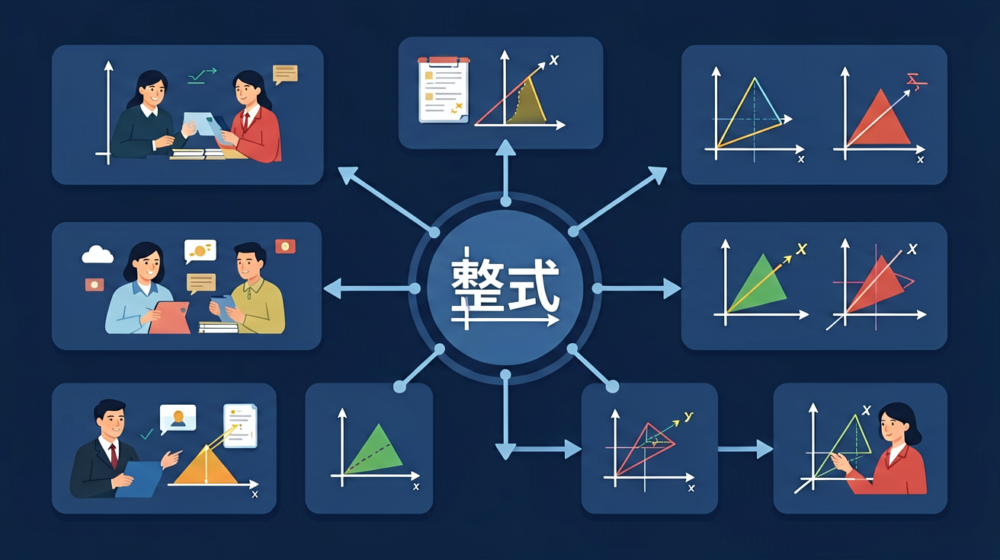

🎯 能判断代数式是否为整式并说明依据
🎯 能准确计算单项式的次数和系数
🎯 能运用合并同类项法则化简整式
❓ 为什么字母和数字混在一起就叫整式？
❓ 整式的次数到底怎么数？为什么3x²y和5xy²次数不一样？
❓ 合并同类项时，为什么字母部分完全一样才能合并？
学完这一课，这些问题你都能自信地回答。
下列哪个不是整式？
单项式-3x²y³的次数是？
我们已经会用字母代替数（如用 a 表示苹果数量），这就是代数式的基础。
但代数式有很多种：3x、x²y、-5、2ab³……它们都叫什么？有什么区别？如何系统地分类和描述它们？
数学定义了"整式"体系，把所有不含除法（或分母中不含字母）的代数式纳入其中。
数与字母的乘积（包括单独的数或字母），叫做单项式。
单项式中字母的指数必须是正整数！
有了单项式，我们可以描述"长为x的正方形面积是x²"。但如果要表示"一个长比宽多3的长方形面积"呢？那就需要多个单项式之和了。
几个单项式的和叫做多项式。
| 多项式 | 项数 | 各项 | 次数（最高次） |
|---|---|---|---|
| x + 3 | 2（二项式） | x，3 | 1次 |
| 2x² − 5x + 1 | 3（三项式） | 2x²，-5x，1 | 2次（二次三项式） |
| a³ + 2a²b − b³ | 3 | a³，2a²b，-b³ | 3次 |
多项式中，每一项包括它前面的符号！
单项式和多项式合在一起，统称整式。理解整式体系后，我们还需要知道什么是"同类项"，为下一章整式加减做准备。
所含字母相同，且相同字母的指数也相同的项，叫做同类项。
圆柱体积公式：V = πr²h（这是一个单项式！）
二次函数：y = x² − 2x + 1（这是多项式！）
速度公式：v = v₀ + at（这是多项式！）
下面是一堆代数式，请完成分类和分析：
① 3x² ② x+y ③ -½a³b² ④ 2a²-3a+1 ⑤ 1/x ⑥ 5 ⑦ x²y-xy²+2 ⑧ √x
判断哪些是整式，哪些不是整式（并说明理由）
把整式分成单项式和多项式两类
对每个单项式，找出系数和次数
对每个多项式，说出它是几次几项式
在④ 2a²-3a+1 中，找出同类项（如果有的话）
阿拉伯数学家花拉子米（al-Khwārizmī）在9世纪写了第一本代数书，"代数"(Algebra)这个词就来自他的书名
整式是代数式的重要组成部分，是学习方程、函数的基础。多项式乘法展开是高中代数的核心技能
计算机图形学大量使用多项式（贝塞尔曲线）；密码学中也用多项式来加密信息